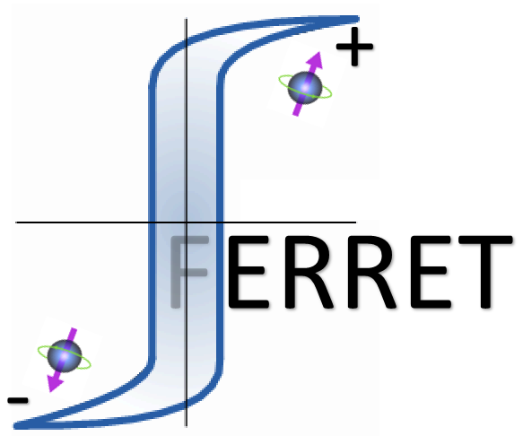
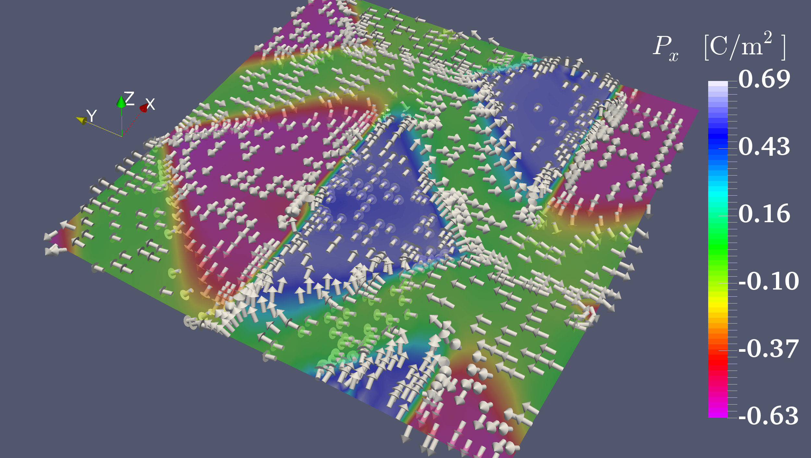

HOME

A parallel finite-element code for evaluating ferroic nanostructures and electronic properties at mesoscale
The FERRET module is based on the Multiphysics Object Oriented Simulation Environment (MOOSE). MOOSE is developed and maintained at Idaho National Laboratory and was open-sourced to the general public under the GNU license in 2014. MOOSE allows for rapid application development sweeping many of the challenges of scientific grade computing software under the "hood". We strongly suggest interested parties to visit the MOOSE website to learn more.
FERRET was developed (at the University of Connecticut in collaboration with scientists at Argonne National Laboratory and Idaho National Laboratory) initially as an application to simulate coupled polar-elastic domain topology of ferroelectric materials. It has since expanded to include ferromagnet and antiferromagnetic materials (along with multiferroics), piezoelectric compounds, and recently thermoelectric phenomena. The scope remains the same - provide the community with an open-source tool that can leverage the advanced software framework of MOOSE to investigate electronic device-relevant problems at the nanoscale.

Typical ferroelectric domain structure indictating a flux-closure type pattern.
Permalloy disk (micromagnetic sim).
A benchmark problem of a piezoelectric element. Here the elastic strain field is strongly coupled to the electric field and the element is actuated via applying an electric field or mechanical deformation.
Evolution of the ferroelectric polarization in a lead-titanate nanoparticle (diameter below 20 nm). The rings correspond to lines of constant flux of the polarization.